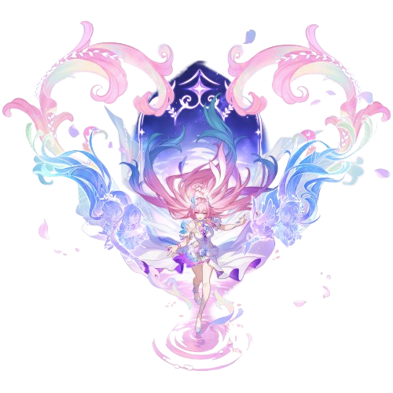

| Cyrene | |
|---|---|
| Ondas de la Reverie Pasada | |
|  | |
| Rareza: | 5 estrellas |
| Tipo: | Hielo |
| Facción: | Reminiscencia |
"¿Es esta una reunión ordenada por el destino, o... un reencuentro largamente esperado? Me está acelerando el corazón. Entonces... por favor, llámame una vez más 'Cyrene', como cuando nos conocimos por primera vez, ¿de acuerdo?"
Un meteoro atraviesa el cielo nocturno, enviando ondas a través del río de la vida, brillando en trece matices.
Hija de Aedes Elysiae, Chrysos Heredero que nutre "██," siembra la Semilla de la Memoria, para que las flores del pasado puedan florecer en el mañana. — "Y juntos, escribiremos un verso como ningún otro antes".
| Contenido |
|---|
¡Mira, la esperanza alza el vuelo!: Gana 1 punto(s) de "Recuerdo" e inflige Daño de Hielo igual al 25% de la Vida Máxima de Cyrene a un objetivo enemigo designado.
To Love and Tomorrow: Obtiene 3 puntos de "Recuerdo" e inflige Daño de Hielo igual al 15% de la Vida Máxima de Cyrene a un enemigo designado, luego inflige Daño de Hielo igual al 15% de la Vida Máxima de Cyrene a todos los enemigos. "To Love and Tomorrow ♪" no puede recuperar Puntos de Habilidad.
Bloom, Elysium del Más Allá: Gana 3 punto(s) de "Recuerdo" y despliega una Zona que dura 2 turnos, con la duración de la Zona disminuyendo en 1 al comienzo del turno de Cyrene. Mientras la Zona está activa, por cada instancia de DAÑO infligido por todos los objetivos aliados, inflige 1 instancia adicional de DAÑO Verdadero igual al 12% del DAÑO original. Cuando Cyrene cae, la Zona también se disipará.
Verse Vow ∞:Invoca a Memosprite Demiurge, lo que provoca que gane inmediatamente 1 turno extra y activa el Ultimate de todos los compañeros de equipo. Luego, entra en el estado "Ondas de la Reverie Pasada", con el ATQ Básico mejorado a "Para Amar y Mañana ♪" y solo puede usar este ATQ Básico. Aumenta la Tasa CRIT de Cyrene y Demiurge en un 25% y despliega el efecto de Zona de la Habilidad sin límite de duración. Solo se puede usar una vez por batalla. El HP Máximo inicial de Demiurge es igual al 100% del HP Máximo de Cyrene.
Reunión a Primera Vista: Hace que el Demiurgo gane inmediatamente 1 turno extra.
Corazones Unidos: Cuando el combate comienza o después de que Cyrene actúa, otros personajes aliados bajo cualquier estado y sus memosprites ganan "Futuro". Cuando los aliados con "Futuro" actúan, consumen "Futuro" para otorgar a Cyrene 1 punto(s) de "Recuerdo". Cuando Cyrene tiene 24 puntos de "Recuerdo", puede activar su Ultimate y disipar todos los debuffs sobre ella. Cuando tiene 12 puntos de "Recuerdo" durante el estado "Ondas de la Reverie del Pasado", puede activar su Ultimate. Después de alcanzar el máximo, los puntos de "Recuerdo" pueden desbordarse hasta 27 puntos. Mientras Cyrene está en el campo, aumenta el daño infligido por todos los aliados en un 10.0%.